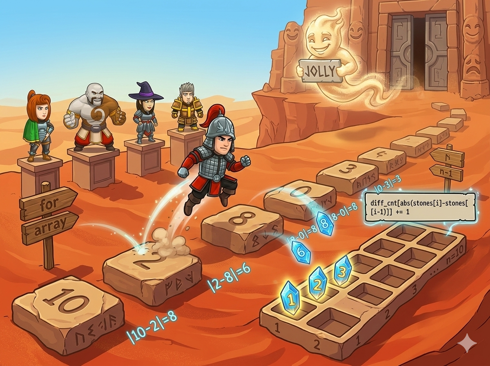

沙漠里有一条由 n 块“跳石”铺成的道路。勇者每次要从一块石头跳到下一块。

沙灵的规则： 我们把相邻两块石头上数字的差（大数减小数）叫做“跳跃距离”。如果这些跳跃距离刚好包含了从 1 到 n-1 的所有数字，不重复也不漏掉，这就是一次 “欢乐的跳” (Jolly)！否则就是 “不够欢乐” (Not jolly)。
要想知道我们有没有收集齐从 1 到 n-1 的所有跳跃距离，最好的方法就是准备一张“任务打卡表”！📋
Jolly，缺一个就是 Not jolly！abs()： 电脑可不知道距离永远是正数！如果用小石头减大石头，会出现负数。用 abs() 把数字包裹起来，负数也会乖乖变成正数啦！（需要 #include <cmath> 工具箱哦）。static_cast<long long>： 这道题的数字可能超级大或者超级小。为了防止相减的时候数字大到“爆炸”（超出 int 的范围），我们临时把它变身成超级无敌大的 long long 类型再减，就绝对安全了！vector<bool> seen(n, false)： 创建一个专门记录真假的本子，一开始全都是 false (没打卡)。#include <iostream> #include <vector> #include <cmath> // 📏 魔法尺子 abs() 在这里面！ using namespace std; int main() { // ⚡ 念动加速咒语，读入速度飞起来！ ios::sync_with_stdio(false); cin.tie(nullptr); int n; cin >> n; // 🖥️ 电脑问：有几块石头呀？ vector<int> a(n); for (int i = 0; i < n; ++i) { cin >> a[i]; // 依次数出每一块石头上的数字 } // 🌟 特殊情况：如果只有1块石头，不用跳，直接算成功！ if (n == 1) { cout << "Jolly\n"; return 0; } // 📋 准备一个长度为 n 的打卡本，一开始全是 false (没打卡) vector<bool> seen(n, false); bool jolly = true; // 先假设我们能通关！(立个Flag) // 🏃♂️ 勇者开始跳跃啦！（从第2块石头开始算跟前一块的距离） for (int i = 1; i < n; ++i) { // 📏 算距离：为了防止数字爆炸，先变成 long long 再相减，然后用 abs 取绝对值 long long diff = abs(static_cast<long long>(a[i]) - a[i-1]); // ⚠️ 警报：如果跳的距离太小（不到1）或者太大（>=n），直接失败！ if (diff < 1 || diff >= n) { jolly = false; // Flag 倒了... break; // 不用往下看了，直接退出！ } seen[diff] = true; // ✅ 距离合法，在打卡本上盖章！ } // 🧐 最后检查环节：如果还没失败，就检查打卡本有没有漏掉的 if (jolly) { for (int d = 1; d < n; ++d) { // 检查 1 到 n-1 每页纸 if (!seen[d]) { // 如果发现有没打卡的 (!seen) jolly = false; break; } } } // 📢 公布结果：如果 jolly 是真的，输出 Jolly，否则 Not jolly cout << (jolly ? "Jolly" : "Not jolly") << '\n'; return 0; }
break？ 当勇者跳跃时，一旦发现有一个距离不对（比如距离等于 0 或者跑到 n 外面去了），这条路就已经“不够欢乐”了，直接用 break 跑路，能让程序跑得更快！1 5 (也就是 n=1，只有一块石头 5)，程序会不会崩溃？我们在代码前面单独加了 if (n == 1) 的防线，把它保护得很好！